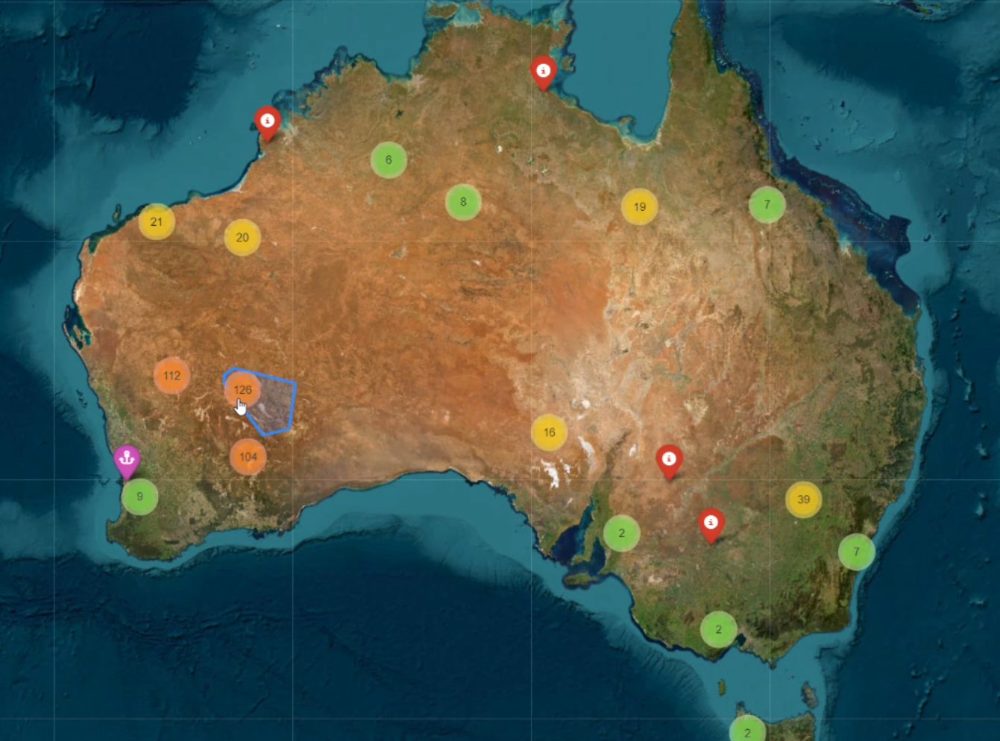

TerraIO
Applied Spatial Computing | LiDAR & Point Cloud Research | Engineering Data Science
About TerraIO
TerraIO is an applied research initiative exploring how spatial computing, drone-based data acquisition, and modern data science can make complex terrain and 3D datasets more interpretable, automated, and actionable. The focus is on developing open methods, workflows, and tools that turn raw spatial data into reproducible, usable insight.
Work here sits at the intersection of point cloud analysis, computer vision, and software development, translating technical methods into reproducible pipelines and visualisation platforms. Research collaboration and knowledge exchange with other researchers and engineers is always welcome.
Research Focus Areas
Drone Mapping & LiDAR
- UAV-based terrain acquisition
- LiDAR point cloud processing
- Automated feature extraction
- Change detection & monitoring
- Volumetric & structural analysis
Digitalisation & Workflows
- Spatial data pipeline automation
- Sensor integration & IoT
- Real-time monitoring dashboards
- Paperless field data capture
- Legacy data digitisation
AI & Optimisation
- Machine learning for point cloud classification
- Semantic segmentation of point clouds
- Predictive spatial modelling
- Automated geometric feature extraction
- Computer vision for inspection workflows
Web & Software Development
- Interactive 3D web visualisation
- Engineering data platforms
- Custom desktop & web applications
- Python, JavaScript, R, C++
- React, Three.js, D3.js, WebGL
Featured Projects
Web-Based Point Cloud Visualisation Platform
A research prototype demonstrating browser-native delivery of large point clouds, no specialist software required. The work investigates optimised streaming, level-of-detail rendering, and remote collaborative access to complex 3D environments.
Geospatial Data Integration & Mapping
An interactive web platform built in Python (Folium) for integrating multi-source geospatial datasets into a unified, queryable map environment. Investigates approaches to spatial data fusion, site-scale visualisation, and accessible delivery of spatial insight.

Desktop 3D Mesh & Point Cloud Analysis Tool
A desktop application developed in Python (VTK) for advanced analysis of 3D meshes and point clouds. Research focus includes region growing algorithms, normal vector estimation, and automated feature classification, supporting efficient interpretation of complex 3D datasets without cloud dependency.
Collaborate
TerraIO is open to research collaboration and knowledge exchange. If you're working on a research problem in spatial computing, point cloud analysis, or engineering data science, I'd be glad to hear from you.